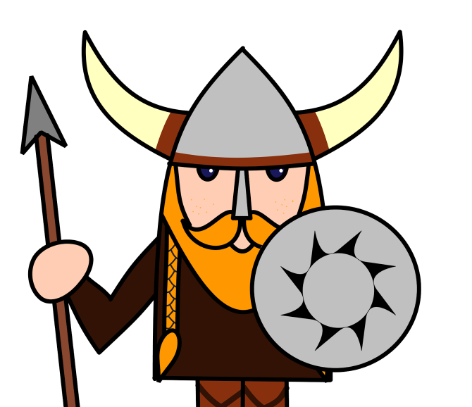

Chegamos a mais uma etapa do Diagnóstico Estratégico! Agora é a hora de elaborarmos as Crenças e Valores! Vamos começar?! Você, após ter navegado por aguas turbulentas, irá utilizar de sua inteligência estratégica para fechar com chave de ouro esta etapa! Vamos ao jogo da forca. O desafio é vencer. Vencendo, melhores serão as palavras que você irá ganhar para elaborar as Crenças e Valores! Boa sorte!
